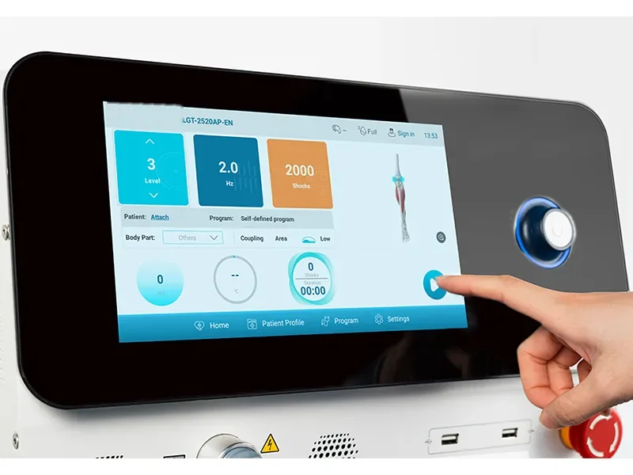
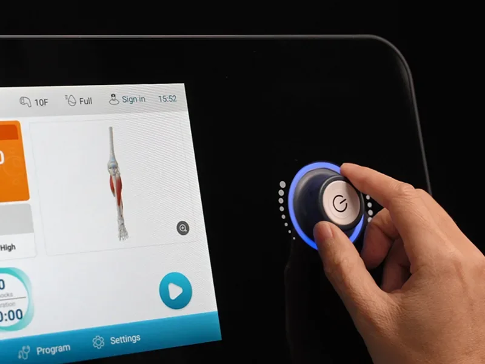
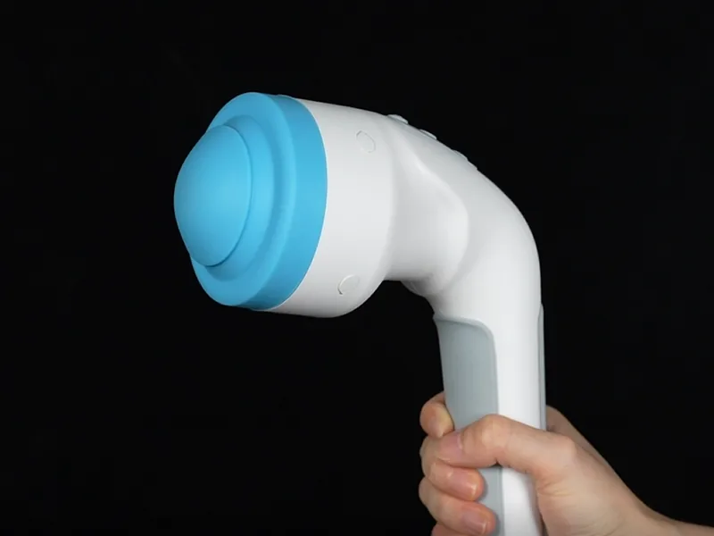
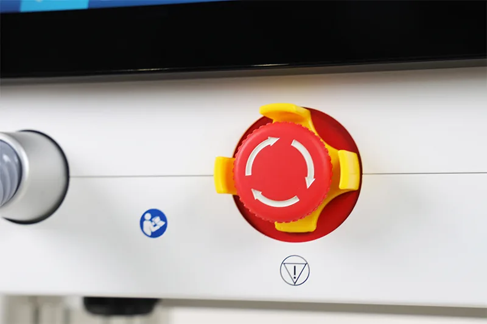
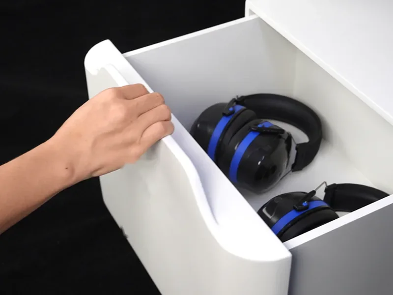
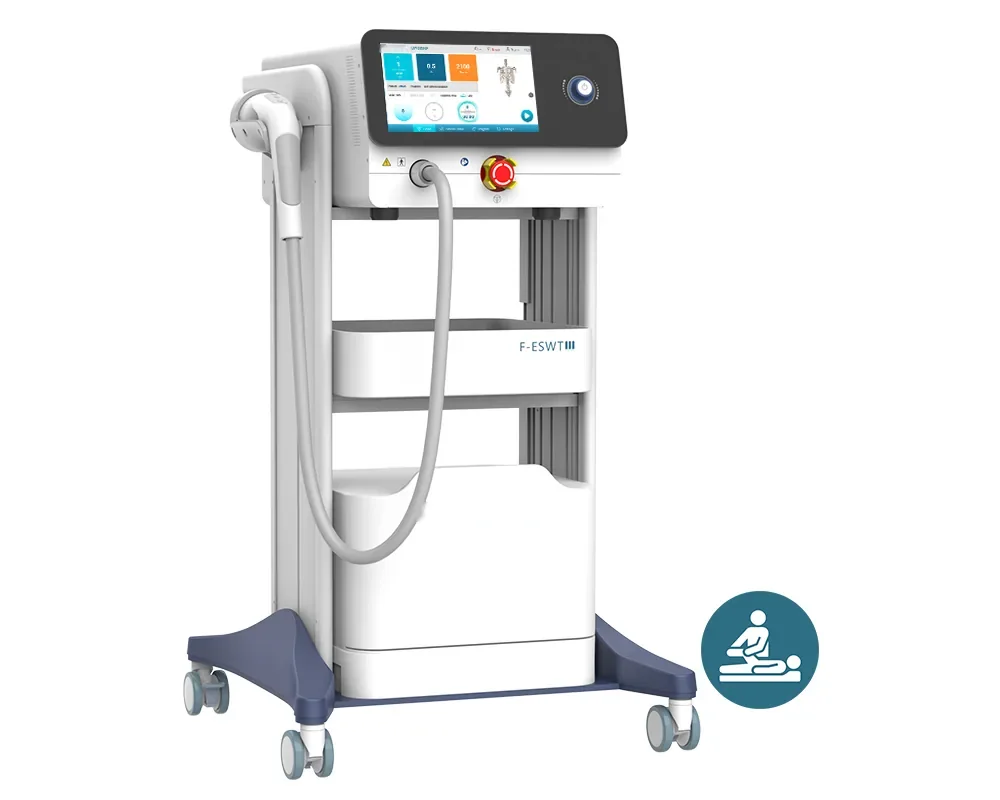
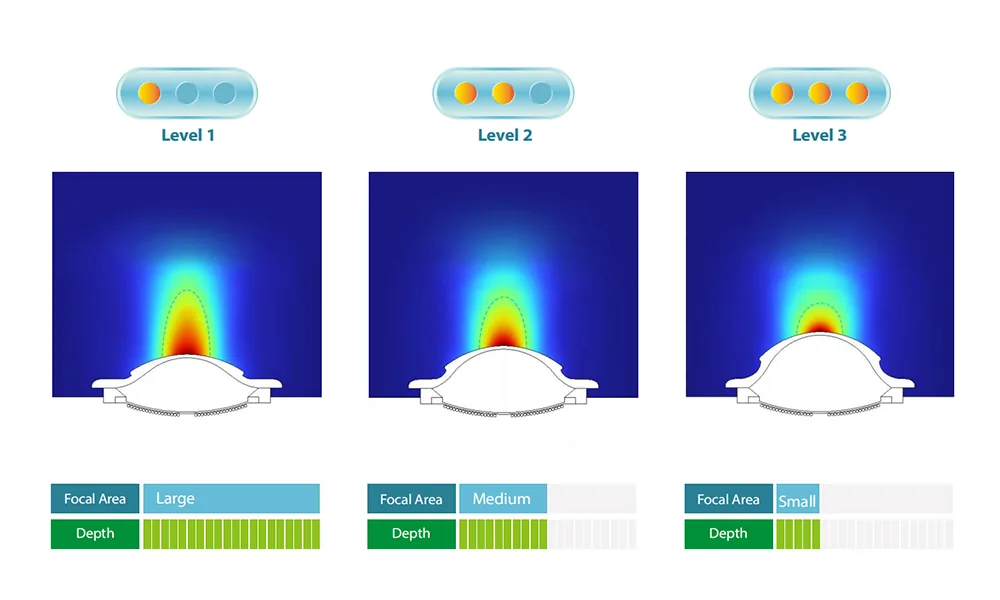
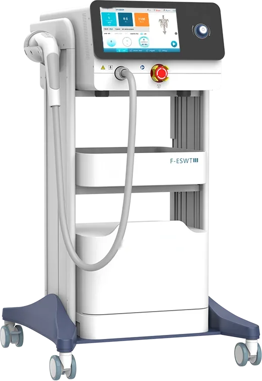
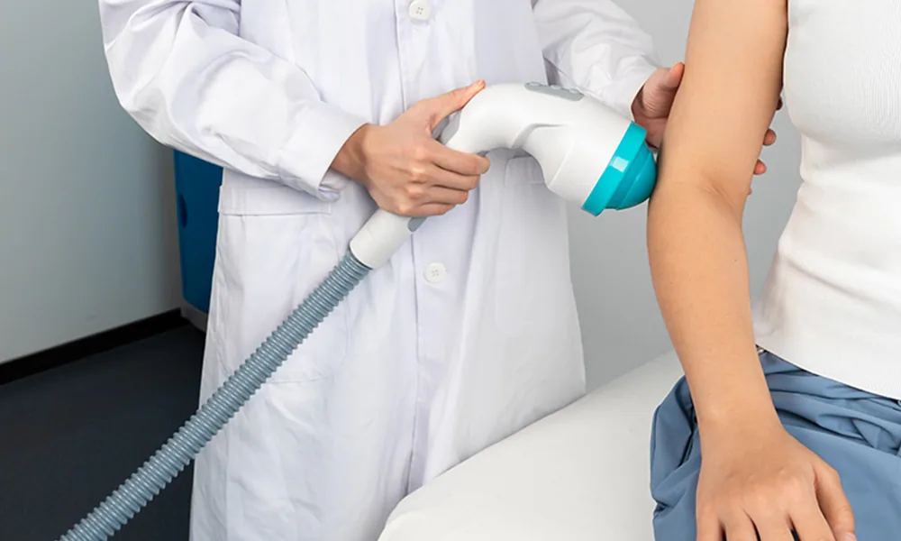

מסך מגע 10.1 אינץ׳
ממשק אינטואיטיבי ונוח לשימוש, עם כל פרמטרי הטיפול מול העיניים.

4,000,000פולסים
4 מיליון פולסים של גלי הלם ממוקדים, לעבודה אינטנסיבית לאורך זמן.
מכשיר גלי הלם אלקטרומגנטיים ממוקדים לקליניקות פיזיותרפיה, כאב ושיקום. מוקד מתכוונן לעומק של עד 100 מ״מ, שלוש רמות אנרגיה וספריית פרוטוקולים מובנית, בליווי מלא של I-Group בישראל.

ממשק אינטואיטיבי ונוח לשימוש, עם כל פרמטרי הטיפול מול העיניים.

כוונון מהיר של הפרמטרים תוך כדי טיפול, בלי לחפש בתפריטים.

משטח רך וידידותי לעור שנצמד לאזור המוקד, ומעביר את האנרגיה לעומקים שונים.

עוצר את הטיפול מיד, לבטיחות המטופל.

תא אחסון מרווח לאביזרים, ואוזניות מבטלות רעש לעבודה נוחה.

משטח יציב למכשיר ותנועה קלה בין חדרי הטיפול.
מוקד מתכוונן שמגיע בדיוק לאזור המטרה, משטחי ועד עמוק.
נמוכה, בינונית וגבוהה, לרקמה רכה ועד בעיות עצם עמוקות.
ספריית פרוטוקולים, תמונת גוף תלת־ממדית, סולם NRS וניהול מטופלים.
מכשיר מאושר, עם תקני איכות ISO 13485 ו־ISO 9001.
מסך מגע 10.1 אינץ׳, כפתור סיבובי, אחסון לאביזרים ועגלה לתנועה קלה.
הדרכה לצוות, תמיכה ושירות בעברית, מהשיחה הראשונה ועד השגרה.
שלוש רמות המוקד, עומק החדירה וטיפול בכתף ובמרפק, בפחות מחצי דקה.

ב־LGT-2520GP שדה הלחץ מתכנס אל מוקד מתכוונן ומגיע ללחץ המרבי בעומק מדויק בתוך הרקמה. כך אפשר לכוון את האנרגיה לאזור המטרה ולהתאים את הטיפול לכל מטופל ולכל מצב.
היצרן מתאר חמישה מנגנוני פעולה של גלי ההלם ברקמה.
כשגלי ההלם נכנסים לאזור המטופל, הם יוצרים השפעה בין שכבות הרקמה.
תהליך דינמי של היווצרות והתמוטטות של בועות מיקרוסקופיות בנוזל, תחת השפעת גלי הקול.
לפי היצרן, גלי ההלם משפיעים על קולטני כאב, מפחיתים את רגישות העצב וחוסמים הולכה עצבית.
גל ההלם פועל על רקמת העצם ומעביר אותות לאוסטאובלסטים ולאוסטאוקלסטים, כחלק מתהליך שיקום העצם.
לפי היצרן: עידוד ייצור גורמי גדילה, שינוי חדירות קרום התא, יצירת כלי דם חדשים ושיפור אספקת המזון המקומית.
כך מגדיר היצרן את ייעוד המכשיר בהפרעות שריר־שלד.

בוחרים רמת אנרגיה נמוכה, בינונית או גבוהה לפי עומק אזור הטיפול. התדירות ורמת האנרגיה מתכווננות בקלות.
רקמה רכה כרונית, סחוס ואי־איחוי שטחי, לפי היצרן.
אי־איחוי עמוק, עיכוב בריפוי שבר, נמק של ראש הירך ובעיות עצם נוספות, לפי היצרן.
התוכנה עוזרת לנהל כל מטופל מהטיפול הראשון ועד האחרון.
המטופל מדרג את הכאב לפני ואחרי כל טיפול, כך שרואים מיד את התמונה אחרי הטיפול ומקבלים החלטות קליניות בביטחון.
תוכנית טיפול אישית לכל מטופל, עם היסטוריה מלאה: מספר טיפולים, הגדרות שבהן השתמשתם והתקדמות לאורך זמן.
בונים טיפולים לפי הצרכים והמצב של כל מטופל, בגמישות ובדיוק.
ספרייה מובנית ופונקציית גוף תלת־ממדית לאיתור מדויק של אזור הטיפול, ותהליך עבודה יעיל יותר.
גל ממוקד לכאב כרוני בשרירים, בעצמות, בעצבים ובאיברים, כפי שמפרט היצרן.
הרשימה מבוססת על פרסומי היצרן ואינה מהווה המלצה רפואית. ההחלטה על טיפול מתקבלת בידי איש מקצוע מוסמך, בהתאם להתוויות הנגד ולהנחיות היצרן.
התצורה, הפרמטרים והפונקציות הסופיים עשויים להשתנות בהתאם לדרישות הרגולציה בכל מדינה.

| דגם | LGT-2520GP |
|---|---|
| טכנולוגיה | גלי הלם אלקטרומגנטיים ממוקדים, מוקד מתכוונן |
| תדירות יציאה | 0.5–20 Hz, בצעדים של 0.5 Hz (סטייה ±10%) |
| עומק טיפול | 0–100 mm |
| רמות אנרגיה | נמוכה, בינונית, גבוהה |
| מסך | מסך מגע 10.1" |
| שליטה | מסך מגע וכפתור סיבובי |
| פולסים מצטברים מרביים | 4,000,000 |
| מידות | 780 × 786 mm (אורך × רוחב, כולל עגלה) |
| משקל נטו | יחידה ראשית כ־25 ק״ג · עגלה כ־59 ק״ג |
| אישורים | אישור אמ״ר (משרד הבריאות) · Health Canada |
| בטיחות | לחצן עצירת חירום |
| תוכנה | סולם כאב NRS, ניהול מטופלים, פרוטוקולים אישיים, ספריית פרוטוקולים ותמונת גוף תלת־ממדית |
| אביזרים | אוזניות מבטלות רעש, תא אחסון לאביזרים, עגלה (אופציונלית) |
היצרן הוא גם חבר תומך ב־ISMST, האגודה הבינלאומית לטיפול בגלי הלם.
טווח רחב של התוויות, עומקים ורמות אנרגיה, בתוך תהליך עבודה מסודר.
עומק, תדירות ורמת אנרגיה לפי המטופל והמצב, עם פרוטוקולים שאתם בונים.
מכתף ומרפק ועד ברך, כף רגל וכאב אגני, לפי רשימת ההתוויות של היצרן.
סולם NRS והיסטוריית טיפולים לכל מטופל, כך שגם המטופל רואה את התהליך.
עד 4,000,000 פולסים מצטברים, אורך חיים ארוך ועלויות תחזוקה נמוכות.
מסך 10.1 אינץ׳, כפתור סיבובי, אחסון לאביזרים ועגלה לתנועה בין חדרים.
אישור אמ״ר של משרד הבריאות ואישור Health Canada, ותקני איכות ISO 13485 ו־ISO 9001.

I-Group מתמחה בפתרונות רפואיים למכוני כאב ושיקום, ומלווה אתכם מהשיחה הראשונה ועד שהמכשיר עובד אצלכם בשגרה.
כן. ל־LGT-2520GP יש אישור אמ״ר של משרד הבריאות, וגם אישור Health Canada. נשמח לשלוח את פרטי האישורים יחד עם ההצעה.
לפי היצרן: תדירות יציאה 0.5–20 Hz בצעדים של 0.5 Hz (סטייה ±10%), עומק טיפול 0–100 mm, מידות 780 × 786 mm כולל עגלה, משקל יחידה ראשית כ־25 ק״ג ועגלה כ־59 ק״ג, ועד 4,000,000 פולסים מצטברים.
לפי היצרן ייתכנו אדמומיות, נפיחות, שטפי דם או המטומה מקומיים, החמרה זמנית של כאב, עקצוץ, נימול או ירידה בתחושה, ולעתים דרמטיטיס ממגע. התגובות האלה חולפות בדרך כלל מהר. תגובה שנמשכת או מחמירה מחייבת פנייה לרופא.
כן. לפי היצרן הטיפול בדרך כלל אינו מתאים להפרעות קרישה, לזיהום פעיל באזור הטיפול, להריון ולמכשירים אלקטרוניים מושתלים (כמו קוצב לב) סמוך לאזור הטיפול. ייתכן שגם אוסטאופורוזיס חמורה או סוגים מסוימים של גידולים באזור אינם מאפשרים טיפול.
לפי היצרן, במקרים רבים אפשר לשלב גל ממוקד עם טיפולים אחרים, כמו טיפול תרופתי, פיזיותרפיה ותרגול שיקומי. תוכנית הטיפול נקבעת בידי הרופא או המטפל לפי מצב המטופל.
לפי היצרן, בניגוד לטיפולים פיזיקליים שמתבססים בעיקר על חום, עיסוי או מתיחות, גל ההלם הממוקד מכוון ישירות לאזור המטרה בעומק הרקמה, והמוקד המתכוונן מאפשר להתאים את עומק הטיפול לכל מטופל.
כן, היצרן מציין אחריות ושירות לאחר מכירה. תנאי האחריות והשירות בישראל יפורטו בהצעה של I-Group.
משאירים שם, טלפון ושם הקליניקה בטופס או כותבים לנו בוואטסאפ, ונציג I-Group חוזר אליכם עם כל הפרטים.
משאירים פרטים, וממשיכים איתנו בוואטסאפ. נציג I-Group יחזור אליכם עם כל המידע ויבדוק התאמה לקליניקה.